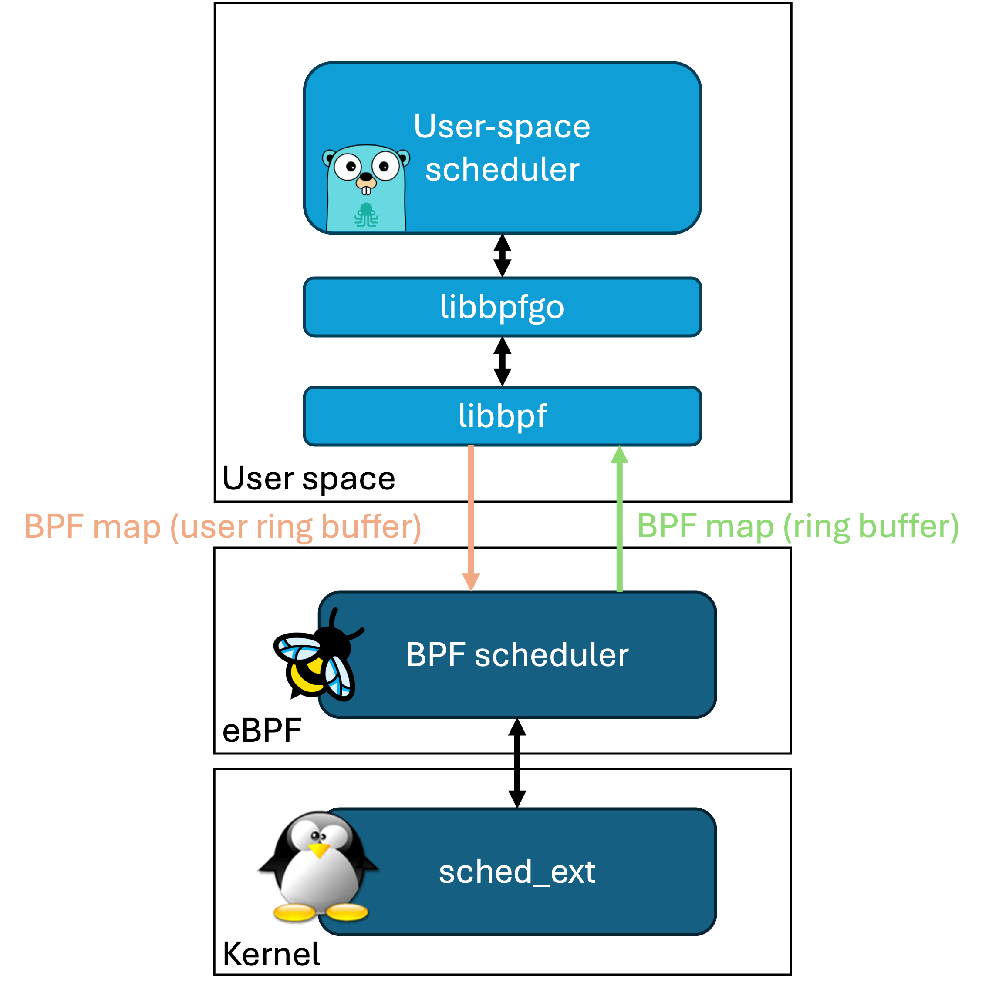
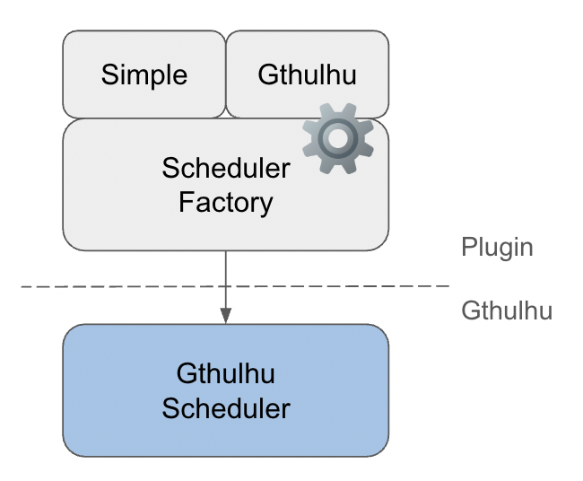

運作原理
本頁面提供關於 Gthulhu 和 Qumun 排程器的核心工作原理和技術架構的詳細資訊。
整體架構
雙元件設計
Gthulhu 排程器採用現代雙元件架構：

1. BPF Scheduler
基於 Linux 核心的 sched_ext 框架實作的 BPF 排程器，負責低階排程功能，如任務佇列管理、CPU 選擇邏輯和執行排程。 BPF 排程器通過 ring buffer 與 user ring buffer 兩種 eBPF Map 與使用者空間的 Gthulhu 排程器溝通。
2. Gthulhu (User Space Scheduler)
使用 qumun framework 開發的 Gthulhu 排程器，它會接收來自 ring buffer eBPF Map 的待排程任務資訊，並根據排程策略進行決策。 最後再將排程結果經過 user ring buffer eBPF Map 回傳給 BPF Scheduler。

Gthulhu 排程器支援插件化設計，允許開發者根據需求擴展和自定義排程策略。 Gthulhu/plugin 目前實作了兩種排程器：
- Simple Scheduler：參考 scx_simple 實作的簡易排程器，核心邏輯約 200 行。
- Gthulhu Scheduler：基於虛擬執行時間的排程器，並加入延遲敏感優化和 CPU 拓撲感知功能。
CPU 拓撲感知排程
階層式 CPU 選擇
graph TB
A[任務需要 CPU] --> AA{僅允許單一 CPU?}
AA -->|是| AB[檢查 CPU 是否空閒]
AA -->|否| B{SMT 系統?}
AB -->|空閒| AC[使用先前的 CPU]
AB -->|非空閒| AD[返回 EBUSY 失敗]
B -->|是| C{先前 CPU 的核心完全空閒?}
B -->|否| G{先前 CPU 空閒?}
C -->|是| D[使用先前的 CPU]
C -->|否| E{L2 快取中有完全空閒的 CPU?}
E -->|是| F[使用相同 L2 快取中的 CPU]
E -->|否| H{L3 快取中有完全空閒的 CPU?}
H -->|是| I[使用相同 L3 快取中的 CPU]
H -->|否| J{有任何完全空閒的核心?}
J -->|是| K[使用任何完全空閒的核心]
J -->|否| G
G -->|是| L[使用先前的 CPU]
G -->|否| M{L2 快取中有任何空閒的 CPU?}
M -->|是| N[使用相同 L2 快取中的 CPU]
M -->|否| O{L3 快取中有任何空閒的 CPU?}
O -->|是| P[使用相同 L3 快取中的 CPU]
O -->|否| Q{有任何空閒的 CPU?}
Q -->|是| R[使用任何空閒的 CPU]
Q -->|否| S[返回 EBUSY]
API 和排程策略設計
Gthulhu 實現了一個靈活的機制，通過 RESTful API 介面動態調整其排程行為。這使運營者能夠在不重啟或重新編譯代碼的情況下微調排程器的性能特性。
API 架構
API 服務器提供用於獲取和設置排程策略的端點：
graph TB
A[Gthulhu 排程器] -->|定期請求| B[API 服務器]
C[運營者/管理員] -->|配置策略| B
B -->|返回策略| A
A -->|應用策略| D[任務排程]
subgraph "外部管理"
C
end
subgraph "排程系統"
A
D
end
API 端點
API 服務器公開了兩個主要端點用於排程策略管理：
- GET /api/v1/scheduling/strategies: 獲取當前排程策略
- POST /api/v1/scheduling/strategies: 設置新的排程策略
排程策略數據模型
排程策略使用以下結構表示：
{
"scheduling": [
{
"priority": true,
"execution_time": 20000000,
"pid": 12345
},
{
"priority": false,
"execution_time": 10000000,
"selectors": [
{
"key": "tier",
"value": "control-plane"
}
]
}
]
}
排程策略的關鍵組件：
- 優先級 (
boolean): 當為 true 時，任務的虛擬執行時間設置為最小值，有效地賦予其最高排程優先級 - 執行時間 (
uint64): 任務的自定義時間片（以納秒為單位） - PID (
int): 策略適用的進程 ID - 選擇器 (
array): 可選的 Kubernetes 標籤選擇器，用於定位進程組
策略應用流程
獲取和應用排程策略的過程遵循以下順序：
sequenceDiagram
participant S as 排程器
participant A as API 服務器
participant T as 任務池
S->>S: 初始化排程器
S->>S: 啟動策略獲取器
loop 每隔 interval 秒
S->>A: 請求當前策略
A->>S: 返回策略列表
S->>S: 更新策略映射
end
Note over S,T: 任務排程期間
T->>S: 任務需要排程
S->>S: 檢查任務是否有自定義策略
S->>S: 如需要則應用優先級設置
S->>S: 如指定則應用自定義執行時間
S->>T: 根據應用的策略排程任務
Kubernetes 集成
對於容器化環境，Gthulhu 可以使用標籤選擇器將排程策略映射到特定的 pod：
- 標籤選擇器解析: API 服務器通過掃描系統中匹配的 pod 將標籤選擇器轉換為特定的 PID
- PID 映射: 識別每個 pod 的進程並將其與適當的排程策略相關聯
- 動態更新: 隨著 pod 的創建、銷毀或移動，排程器通過定期刷新其策略來適應變化
策略優先級邏輯
應用排程策略時，Gthulhu 遵循以下規則：
- 直接 PID 匹配: 明確指定 PID 的策略具有最高優先級
- 標籤選擇器匹配: 使用標籤選擇器的策略適用於所有匹配的進程
- 默認行為: 沒有特定策略的進程使用標準排程演算法
配置參數
策略獲取行為可以通過排程器的配置文件進行配置：
這種架構允許在不中斷排程器操作的情況下對排程行為進行動態、細粒度的控制。
BPF 和用戶空間通信
通信機制
sequenceDiagram
participant K as BPF (核心空間)
participant U as Go (用戶空間)
K->>U: 任務創建事件
U->>U: 分析任務特性
U->>K: 設置排程參數
K->>K: 應用排程決策
K->>U: 統計更新
U->>U: 動態策略調整
調試和監控
BPF 追踪
# 監控 BPF 程式執行
sudo cat /sys/kernel/debug/tracing/trace_pipe
# 檢查 BPF 統計數據
sudo bpftool prog show
sudo bpftool map dump name task_info_map
與 CFS 的差異
| 功能 | CFS (完全公平排程器) | Gthulhu |
|---|---|---|
| 排程策略 | 基於虛擬執行時間 | 虛擬執行時間 + 延遲優化 |
| 任務分類 | 統一處理 | 自動分類優化 |
| CPU 選擇 | 基本負載平衡 | 拓撲感知 + 快取親和性 |
| 動態調整 | 有限 | 全面自適應調整 |
| 可擴展性 | 核心內建 | 用戶空間可擴展 |
未來發展方向
- 機器學習集成: 使用 ML 模型預測任務行為
- 容器感知排程: 針對容器化環境的優化
- 能源優化: 集成電源管理考量
- 實時任務支持: 支持硬實時任務排程
深入了解
有關更多實現細節，請參閱 API 參考 和源代碼註釋。